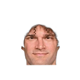
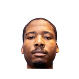
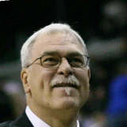
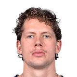

“We have to continue to get improvement out of our young players like Markieff (Morris). I think Jared Dudley has made improvements. We have to get Robin (Lopez) to the point where he's consistently playing (well). I don't think we're a championship team. But I definitely think with the addition of a couple of guys here and there in free agency, we can get back in the mix and be a factor, for sure.”

What NBA players and coaches have said about Robin Lopez
15 quotes about Robin Lopez from 11 players, coaches and executives, newest first. Each one links to its original source.
Best quotes
Another interesting quote fromEd Davis on #Blazers:
“I think there's a good chance that they're going to lose LaMarcus and Lopez. I'm going to go out and grind. I'm not shooting a whole bunch of 3s and things like that. But I'm going to grind every night. I'm going to dive for that loose ball, get that extra possession, make a big block. I'm one of those energy guys.”

Ed Davis on LaMarcus Aldridge, Robin LopezTwitter @BlazerFreemanHickson explained to CSNNW.com.
“I heard something to the extent of, ‘For the Blazers to be better, we can’t bring JJ back.’That was one of the ones that really caught my attention. I was like, ‘wait, what?’ And they go out there and get a new center [Robin Lopez] and he has only three rebounds.”
JJ Hickson on Robin LopezCSNNW.com
What Robin Lopez has said about other players and coaches →
Quotes per season
Who talks about Robin Lopez most
- Alvin Gentry on Robin Lopez2 quotes
- Lon Babby on Robin Lopez2 quotes

Phil Jackson on Robin Lopez2 quotes Rajon Rondo on Robin Lopez2 quotes
Rajon Rondo on Robin Lopez2 quotes Brook Lopez1 quote
Brook Lopez1 quote Derek Fisher1 quote
Derek Fisher1 quote- Ed Davis1 quote
- JJ Hickson1 quote

Moritz Wagner1 quote- Rick Carlisle1 quote
- Stan Van Gundy1 quote
Back and forth
- Robin Lopez and Rajon Rondo3 quotes
2020-21
1 quoteFred Katz:Moe Wagner on Robin Lopez sharing his wisdom with him:
“This guy has been in the league for multiple generations, it feels like.”
2017-18
1 quoteTim MacMahon:Rick Carlisle:
“I just saw Robin Lopez in the hall and told him Dirk was going to beat the s— out of him. True story.”
2016-17
3 quotesChuck Garfien:Rajon Rondo on Robin Lopez:
“He's going to surprise a lot of people. If we have a great record, I'm going to try and push him for All-Star.”
Chuck Garfien:Rajon Rondo on Robin Lopez:
“I didn't see too many guys go back at DeMarcus Cousins last year and he was one of those guys.”
Ian Begley:Phil Jackson:
“Losing Robin Lopez was like getting a tooth pulled. It was not easy. We did not want to lose him.”
2015-16
4 quotesJackson said as much in an interview Monday with WNBC.
“In our meeting at the end of the season, Carmelo said, ‘really (the Knicks' situation is) not that bad. I think we have the best front line guys in the game, in the Eastern Conference, in Robin (Lopez), myself and Kristaps (Porzingis),'”
“We have nobody to play those two guys and Robin Lopez always plays great against Andre (Drummond), always.”
“That was a big part of why we specifically went after certain guys in free agency – Robin [Lopez], Arron [Afflalo], guys who can provide that type of leadership and example,’’ Fisher said. Fisher also mentioned re-signing Lance Thomas and Lou Amundson and adding Sasha Vujacic, who has been one of Porzingis’ mentors.“They’re younger, but have a mature approach to their business,”
Another interesting quote fromEd Davis on #Blazers:
“I think there's a good chance that they're going to lose LaMarcus and Lopez. I'm going to go out and grind. I'm not shooting a whole bunch of 3s and things like that. But I'm going to grind every night. I'm going to dive for that loose ball, get that extra possession, make a big block. I'm one of those energy guys.”
2014-15
1 quoteFred Kerber:#Nets Brook Lopez on clash with #Hornets mascot:
“He was just talking trash... He brought out the Robin Lopez in me for sure.”
2013-14
1 quoteHickson explained to CSNNW.com.
“I heard something to the extent of, ‘For the Blazers to be better, we can’t bring JJ back.’That was one of the ones that really caught my attention. I was like, ‘wait, what?’ And they go out there and get a new center [Robin Lopez] and he has only three rebounds.”
JJ Hickson on Robin LopezCSNNW.com
2012-13
1 quotePaul Coro:#Suns prez Lon Babby on Lopez:
“Robin loved it in Phoenix but he made it clear he was really looking for an opportunity to be a starter.”
2011-12
2 quotes“We have to continue to get improvement out of our young players like Markieff (Morris). I think Jared Dudley has made improvements. We have to get Robin (Lopez) to the point where he's consistently playing (well). I don't think we're a championship team. But I definitely think with the addition of a couple of guys here and there in free agency, we can get back in the mix and be a factor, for sure.”
With a Wednesday deadline looming, Phoenix Suns president of basketball operations Lon Babby said Tuesday night the team would not offer fourth- year center Robin Lopez a contract extension, making him a restricted free agent at season's end.
“We reached out to (Lopez's agent) Arn Tellem and let him know that we were willing to engage in discussions to see if there was any common ground that might make sense,”
2010-11
1 quotePaul Coro:Gentry on Lopez:
“I would say he's not back 100 percent but I think he's pretty close to being back.”